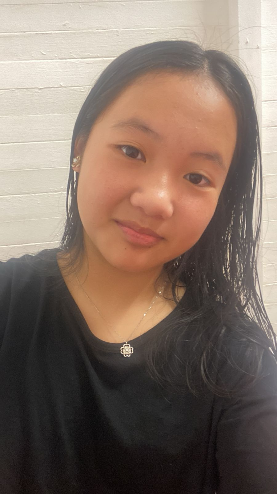
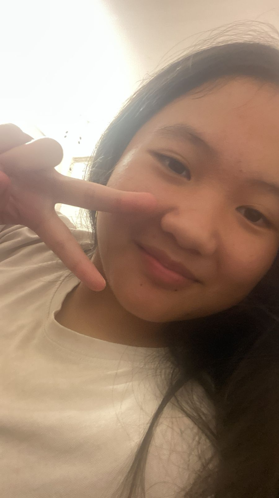
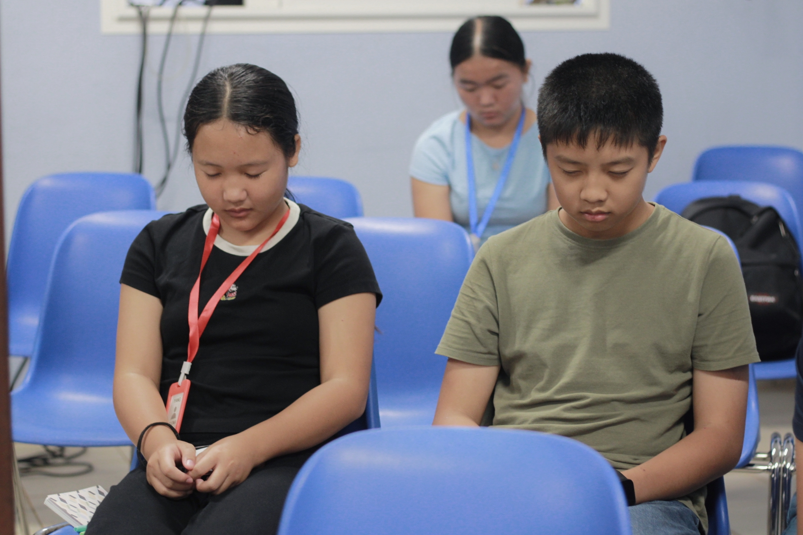

Ce que je garde en mémoire, même si tout s'efface.



Regarder ces images me rappelle à quel point chaque seconde comptait et où tu étais précieuse pour moi. Je te laisse ces morceaux de nous ici. Prends-en soin, ou oublie-les si c'est plus facile pour toi...
← Revenir en arrière